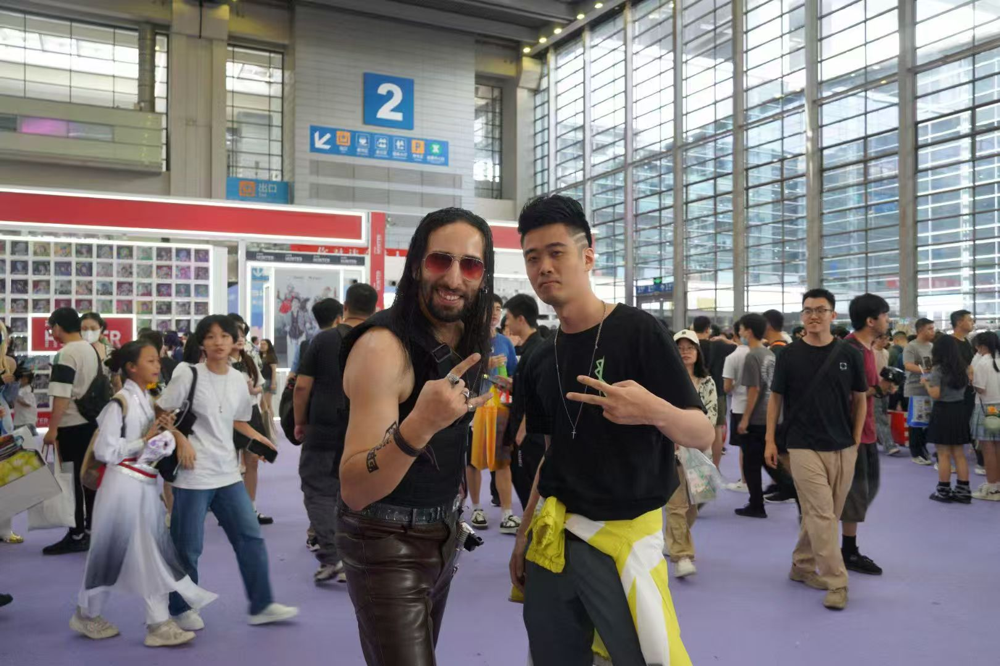
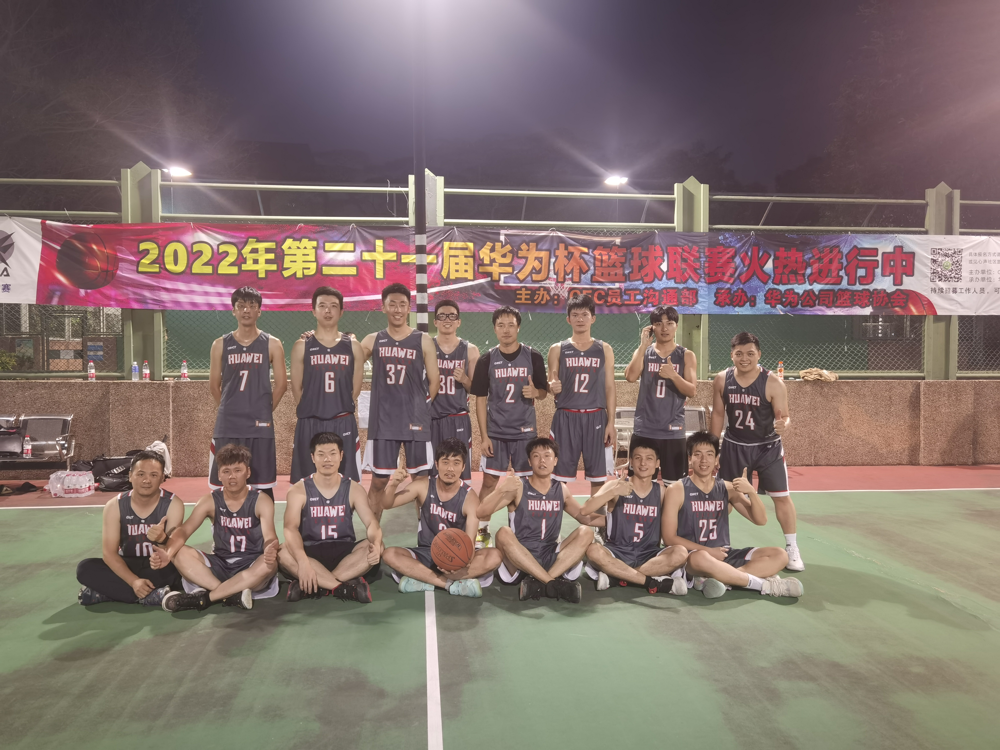
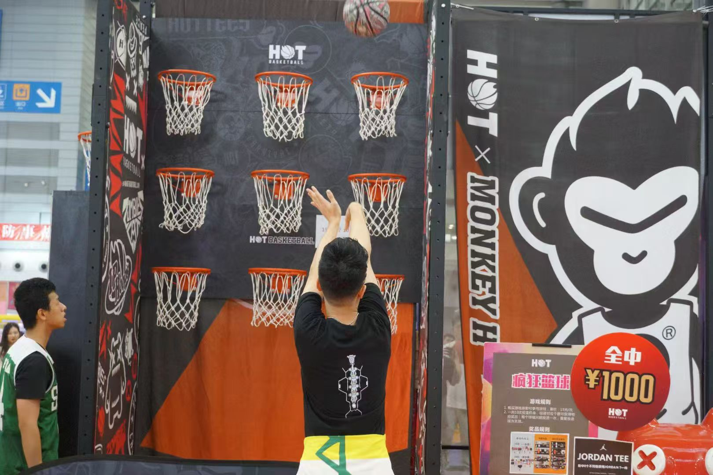

Beyond Work · 克制二次元番外篇
项目之外，我也在游戏、球场、舞台和家里补能。
简历讲交付结果，这一页讲更立体的一面：我是游戏动漫爱好者，会自己动手做小游戏；也组织队伍、站上舞台，并在高强度工作之外保持热情、松弛感和观察力。

01 · Game & Anime
游戏动漫爱好者 · 自己做小游戏
我是游戏动漫爱好者，喜欢从玩家视角拆解玩法，也忍不住自己动手实现。抽空开发了一个小程序游戏，把想玩的点子做成了能跑起来的东西——欢迎来玩。
Indie独立开发
Mini小程序游戏
Play可玩 Demo
02 · Basketball
队长兼组织者
连续三年代表所在公司参加内部篮球联赛，最高名次第四名。对我来说，篮球不是简历之外的装饰，它是长期组织、临场判断和团队信任的训练场。
3连续参赛年份
#4最高名次
C队长 / 组织者


03 · Music
舞台表达
连续两年在公司年会上唱歌、rap。这首歌我负责 Verse 的作词和表演，平时喜欢把心里的东西写成节奏，再带到台上。
Verse作词
Rap表演
Live现场呈现
《Riding Through this Wave》：再来亿遍 · 在 B 站打开
04 · Cat
家里的猫
工作之外，我喜欢记录家里猫的日常。它算是生活里的稳定器，也提醒我在高强度项目节奏里保留一点松弛感和观察力。
Mood Manager
Home QA Lead
Stress Reducer
cat-hero.jpg
cat-01.jpg
cat-02.jpg
cat-03.jpg / cat-04.jpg